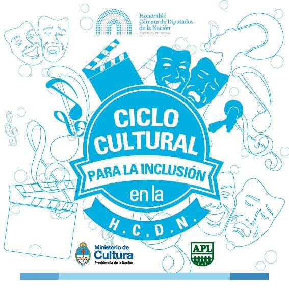

CENTRO DE NEUROCIENCIAS E INTELIGENCIA ARTIFICIAL Y MEDICINA
NUTRICIONAL
MISIÓN, VISIÓN Y BENEFICIARIOS
La experiencia de la pandemia CoViD-19 reafirma la importancia de
las Ciencias Cognitivas como herramienta idónea para el aporte de
espacios de neguentropía y homeostasis sistémica de la salud humana,
ya que se multiplicaron amenazas epigenéticas vinculadas al modelo
nutricional hegemónico y afectación del medio ambiente, ya
existentes en forma previa a la catástrofe disparada a fines de
2019. La pandemia ha sido un laboratorio existencial involuntario,
que determinó aislamiento obligatorio al principio y aceleró una
nueva cultura de trabajo desde el hogar con mayor sedentarismo y un
incremento concomitante de la pandemia de obesidad y otras
enfermedades crónicas no transmisibles -ECNT- El 30% de las
internaciones por COVID fue de personas obesas que presentaron un
46% mayor de riesgo de contraer la enfermedad. La gravedad por
contraer COVID siendo obeso, se acompañó de un 113% de posibilidades
de ser hospitalizado, y un 74% de terminar en terapia intensiva, con
un 48% mayor de riesgo de muerte. Hay una relación directa entre
sobrepeso obesidad y la presencia de síndrome metabólico,
prediabetes, diabetes 2, hígado graso, cardio metabolopatías, cáncer
y depresión en donde conviven resistencia insulínica, alteraciones
del microbioma y predominio de la vía metabólica mTOR en relación a
la vía AMPK.
Por otra parte las ECNT en su conjunto, se desarrollan ontológica y
epigenéticamente en un entorno social y cerebral adictivo a los
azúcares, almidones y grasas trans presentes en alimentos
ultraprocesados (AUP) en donde están alteradas las señales normales
de hambre y saciedad. El árbol neurohumoral de decisiones
alimenticias está capturado por señales de apetito anárquico, así
como por conductas impulsivas y toma de decisiones propias de un
cerebro adicto. Existe una estrecha relación entre la calidad de
ingesta alimentaria, la homeostasis energética y el sistema hedónico
cerebral, amenazado y engañado continuamente por señales producidas
a nuestros sistemas de información neurohumoral por alimentos
adictivos y un neuromarketing inductor de consumo adictivo. Esta
ingeniería bio-emocional cognitiva y conductal defectuosa, dispara
genes ahorradores de grasa y es responsable del 85% de muertes
prematuras entre los 30 y 70 años de edad a nivel global.
Nuestro desarrollo de investigación clínica aplicada, aporta:
(a) herramientas disruptivas en los procesos de
eficiencia neuropedagógica, hecho que permitiría acortar los ciclos
de entrenamiento de Recursos Humanos así como mejorar la calidad de
la performance laboral a través de la búsqueda de la calidad de
vida; (b) coaching basado en la evidencia, para dar
eficiencia conductal cognitiva en la Prevención Primaria y
Secundaria de las ECNTs. Ello implica la generación de importantes
ahorros en los costos asistenciales de salud para los financiadores
de servicios interactuando en un triage integrador con las
especialidades involucradas (cardiología, oncología, medicina
interna, ginecología, diabetología, etc.). Disponemos de
productos-servicio, para el sector privado, Gobiernos, Gerencias de
Personal, Universidades, Escuelas Primarias y Secundarias y público
en general, que necesitan del aporte de las Ciencias Cognitivas para
la mejora de la toma de decisiones, mediante una adecuada
performance de gestión y la vertebración de líneas de investigación
y de transferencia de tecnología, “taylormade”, adaptadas a cada
escenario.
Tenemos propuestas para la mejora de las destrezas cognitivas
(enhancement del aprendizaje) de los investigadores y gestionadores
corporativos y gubernamentales en sus habilidades duras y blandas.
los Recursos Humanos que no están disponibles para atender
necesidades urgentes de las Universidades, la Industria, los
Servicios y el Estado, con una metodología capaz de vencer la
barrera del tiempo para el resultado que demandan los procesos de
distintas obsolescencias.
Nuestra Visión se inserta en la I+D+i con aportes para necesidades
globales, facilitados por la comunicación mediante la investigación
continua y la búsqueda de nuevas aplicaciones, colaborando con otras
ONG, Organizaciones Multilaterales y Agencias especializadas en el
crecimiento sostenible con alto Desarrollo Humano. Esto implica la
ampliación de oportunidades de desarrollo profesional educativo y
sanitario para la sociedad humana actuando con un compromiso con la
ciudadanía, a nivel global con un compromiso indeclinable con la
ética.
Los beneficiarios más importantes, a partir de nuestra propuesta, se
centran en:
1. La Educación y la Capacitación, en un momento en
que los fenómenos globales instalan mediante e-commerce e Internet
la posibilidad de acceso a productos y servicios en forma digital.
Se presenta un cambio en el paradigma educativo vertebrado por los
aportes de las Ciencias Cognitivas.
2. La Salud en un momento donde los costos de
personal, fármacos y tecnología diagnóstica y terapéutica afecta
entre el 8 y 12% del PBI de los países. NC e IA cambian la
eficiencia diagnóstica y la incorporación de la medicina basada en
patrones y no sólo en la evidencia. La Medicina Nutricional junto a
la nutrigenética y nutrigenómica se benefician en un espacio
interdisciplinario con las Ciencias Cognitivas (NC&IA) para una
mejor performance en la Prevención Primaria y Secundaria de las
ECNT.
3. La Defensa y la Seguridad, en el entendimiento
que los complejos industriales-militares están ávidos de tecnología
útil tanto para la contención como la calidad de respuestas en el
escenario de la denominada guerra asimétrica, que comprende la
cobertura de tecnologías para enfrentar desde el neuroterrorismo y
el narcotráfico/neuropolítica hasta el neuromarketing para el
condicionamiento de los comportamientos sociales frente al consumo y
el crédito.
4. La práctica de los Deportes, surge como hecho
fundamental la necesidad de vincular las neurociencias en una
verdadera disrupción nutricional con herramientas para modificar
hábitos de conducta de base bio-emocional. El aporte de las ciencias
cognitivas marca una diferencia en la salud pública también en los
deportistas de élite.
⦁ Democracia Cerebral: Desarrollo de un Think Tank vinculando las Neurociencias e Inteligencia Artificial con las geronto ciencias, la economía y la sociología y las ciencias de la educación.
⦁ Desarrollo de Programas de Medicina Nutricional con el soporte de las Neurociencias (psicoinmunoneuroendocrinología + técnicas cognitivo-conductales), la biología molecular, la nutrigenética, nutrigenómica y las geronto ciencias al servicio del mejoramiento de la calidad de vida, el envejecimiento saludable y el rendimiento psicofísico laboral y deportivo.
⦁ Neurociencias IA y nutrición inteligente en el contexto de la guerra asimétrica.
⦁ Las Neurociencias y la Inteligencia Artificial + nutrigenética/nutrigenómica aplicadas al perfeccionamiento del Aprendizaje (knowledge enhancement) en poblaciones de menores recursos y en el ámbito académico, corporativo y de la Defensa.
⦁ Investigación Orientada a aplicaciones interdisciplinarias en áreas de Neurociencias aplicadas a la percepción de errores (diferencias percibidas entre lo esperable y la realidad), incorporando modelos de Investigación de Operaciones y particularmente, Sistemas de Gestión de Conocimiento y Decisión Inteligente.
⦁ Transferencia de Tecnología de Ciencias Cognitivas al mejoramiento de la Investigación Científica en el ámbito académico universitario y en el ámbito corporativo y de la gestión del Estado.
- Dr. Mario Kamelman Levitin, Director.
Cámara de Diputados de la Nación Argentina
Salón Auditorium
Comisión de Defensa
En el marco del ciclo de charlas: "El futuro de la Defensa Nacional en la Honorable Cámara de Diputados de la Nación" - "Ciclo Cultura para la Inclusión - Honorable Cámara de Diputados de la Nación".
Conferencia: "El Guerrero Perfecto"
Disertante: Mario KAMELMAN
LINKS PARA REFERENCIAR
Noviembre 2014
Jornadas de Neurociencias e Inteligencia Artificial
Universidad Nacional de Luján, Centro Regional Chivilcoy, Argentina
https://www.larazondechivilcoy.com.ar/locales/2014/11/1/realizar-chivilcoy-jornada-neurociencias-inteligencia-artificial-6462.html
https://www.larazondechivilcoy.com.ar/locales/2014/11/14/jornada-neurociencias-inteligencia-artificial-unlu-6820.html
Jornada de Neurociencias e Inteligencia Artificial
Universidad Nacional de Luján, Centro Regional Chivilcoy
Fecha: 14-11-2014
Conferencia 1: Las Neurociencias como Nueva Revolución Científica
Disertante: Mario KAMELMAN
Conferencia 3: Visión Interdisciplinaria: desde la Inteligencia Artificial hacia las Neurociencias
Disertantes: Mario KAMELMAN
Jornadas JIT-CITA 2015
Universidad Autónoma de Asunción y Universidad Nuestra Señora de la Asunción. Asunción, Paraguay
Ad Hoc: Jornadas de Inteligencia Artificial y Neuro-Aprendizaje
Programa General
Fecha: 18-09-2015
Conferencia: Las Neurociencias como Nueva Revolución Científica
Disertante: Mario KAMELMAN
Fecha: 19-09-2015
Conferencia: Visión Interdisciplinaria: desde la Inteligencia Artificial hacia las Neurociencias
Disertantes: Mario KAMELMAN
Escuela Superior de Guerra Conjunta. CABA, Argentina
Maestría en Estrategia Militar
Conferencia: Neurociencias y Guerra Híbrida. El Cerebro como teatro general de Operaciones
Disertante: Mario KAMELMAN
En carácter de Profesor Invitado
Escuela Superior de Guerra, Ejército Argentino. CABA, Argentina
Conferencia Magistral: Neurociencias y Defensa
Conferencia Magistral: Cerebro y Emoción
Conferencia Magistral: Neuroaprendizaje y Toma de Decisiones
Conferencia Magistral: Neuromarketing y Guerra Asimétrica
Disertante: Mario KAMELMAN
En carácter de Profesor Invitado del Programa MTDM.
CICLO: NEUROCIENCIA Y DEFENSA - CIRCULO MILITAR
Asistieron 50 Oficiales del Estado Mayor de las tres Fuerzas Armadas.Al recibir los Premios: a) Medicina; b) Ciencias e Investigación de la Accademia Cartagine
Palazzo Chigi. Ariccia, Roma, Italia
Fecha: Abril 2018
Conferencia: Neuroscienze e Decisioni nel Settore della Militari e di Sicureza
Disertante: Mario KAMELMAN
Métrica
Eurostat - Hotel Garbi. Ibiza, Islas Baleares,
España
Fecha: Octubre 2019
Conferencia: Efectos Psicoinmunoendocrinos de la Escucha Musical
Disertante: Mario KAMELMAN
Conferencia Internacional “Desafíos de la Investigación y la Innovación en Tiempos de CoViD”
Universidad César Vallejo, Sede Trujillo. Perú.
Resolución 0316-2020/UCVTRUJILLO - 26/28-11-2020
Fecha: 27-11-2020
Conferencia: El Maridaje entre el Modelo Económico-Social y Educativo y una Salud Pública coherente
Disertante: Mario KAMELMAN
Fecha: 28-11-2020
Panel de Clausura: “Desafíos de la Investigación en la Planificación Post-Pandemia”
Conferencia 2: La Gestión Sanitaria como parte de la Racionalidad Educativa y Productiva del Estado
Disertante: Mario KAMELMAN
Reconocimiento y Felicitación por la Disertación, de parte del Vicerrectorado de Investigación de la Universidad César Vallejo, mediante Resolución 062-2020-VI-UCV.
Maestría en Administración Pública
Facultad de Humanidades, Ciencias Sociales y Empresariales, Universidad Maimónides
Fecha: 14-04-2021
Conferencia: Neurociencias, Inteligencia Artificial y Servicios Públicos
Disertante: Mario KAMELMAN
Seminario Internacional: Las TIC y Educación Universitaria en Tiempos de Pandemia
Universidad Nacional de la Frontera. Superintendencia Nacional de Educación Superior Universitaria. Perú
Fecha: 24-09-2021
Seminario 2: Neurociencias, proyección a la Neuroeconomía y el Neuromarketing
Disertante: Mario KAMELMAN
Diplomatura en Ciencia del Envejecimiento Cardiovascular y Cerebrovascular. Avances Clínicos y Terapéuticos
Academia Nacional de Medicina. Ciudad Autónoma de Buenos Aires
Fecha: Octubre 2021
Módulo 8: Evidencias en Estrategias Terapéuticas Convencionales y no Convencionales en la Reserva Cognitiva
Disertante: Mario KAMELMAN
Workshop Internacional “Aprender en Entropía para alcanzar la Homeostasis: Desafío de la Ingeniería”.
Universidad César Vallejo, Vicerrectorado de Investigación. Trujillo, Perú
Conferencia Presente.5: Neuromarketing, Neuroeconomía y Neuropolítica, un constructo de la Ingeniería de la realidad
Disertante: Mario KAMELMAN
Conferencia Futuro.10: Una ingeniería de la realidad cruzada por la Neuroética: el futuro deseable
Disertante: Mario KAMELMAN
Semana Nacional de la Ingeniería en Perú - Workshop Internacional “Desafíos de la Ingeniería”
Colegio de Ingenieros de Lima. Perú
Fecha: 10-06-2022
Conferencia 7: Las Neurociencias, Visión Interdisciplinaria en pro de mejorar la Toma de Decisión
Disertante: Mario KAMELMAN
Curso de extensión: "INTRODUCCIÓN A NEUROCIENCIAS E INTELIGENCIA ARTIFICIAL”
Universidad Nacional de Mar del Plata
Facultad de Ingeniería
Fecha: Segundo cuatrimestre del 2022
Disertante: Mario KAMELMAN
Certificado de curso:

NEUROCIENCIAS E INTELIGENCIA ARTIFICIAL EN CHIVILCOY

CONFERENCIA: EL FUTURO DE LA DEFENSA 11/9/2014
Dr. Mario Kamelman Levitin: "El cerebro, es una víscera que concitó la atención e interdisciplina de muchas especialidades".


Video
CICLO: NEUROCIENCIA Y DEFENSA - CIRCULO MILITAR
Asistieron 50 Oficiales del Estado Mayor de las tres Fuerzas Armadas.
Año 2017


{kind=link}
{kind=link}
{kind=link}